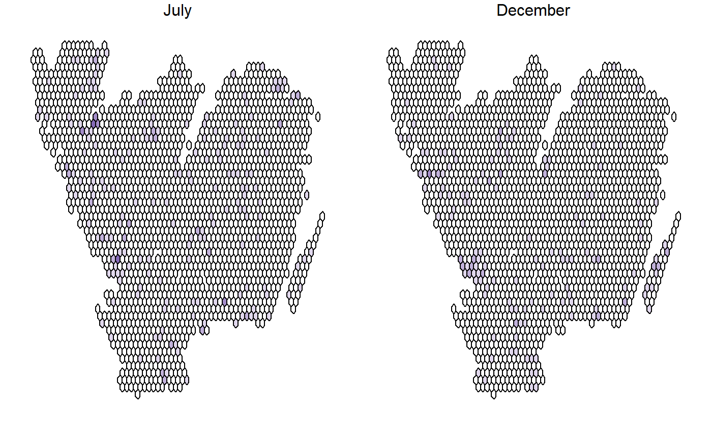

The primary aim of this package is to provide tools for Biodiversity Informatics in order to understand the specis information data and decide about what analyses we can perform and draw approriate conclusions. For this we need to understand the data generation process. With this R package we want to take the user a step closer to understanding the observers’ behaviour. The 'BIRDS' packages provides a workflow for reproducable data review, involving three basic steps: organise data, summarise data, review data.
# \donttest{ # Organise the data OB <- organizeBirds(bombusObsShort, sppCol = "scientificName", simplifySppName = TRUE) OB2 <- organizeBirds(bryophytaObs, sppCol = "species", simplifySppName = FALSE, taxonRankCol = "taxonRank", taxonRank = c("SPECIES", "SUBSPECIES","VARIETY"))#># Make a grid that can be used by summariseBirds() # gotaland is a SpatialPolygonDataFrame provided as an example grid <- makeGrid(gotaland, gridSize = 10)#> Warning: Discarded ellps WGS 84 in CRS definition: +proj=merc +a=6378137 +b=6378137 +lat_ts=0 +lon_0=0 +x_0=0 +y_0=0 +k=1 +units=m +nadgrids=@null +wktext +no_defs#> Warning: Discarded datum WGS_1984 in CRS definition#> Warning: NULL source CRS comment, falling back to PROJ string#> Warning: +init dropped in PROJ string#> Warning: CRS object has comment, which is lost in output# Summarise the data (using the grid to overlay with the organised data) SB <- summariseBirds(OB, grid=grid)#>EBnObs <- exportBirds(SB, dimension = "temporal", timeRes = "yearly", variable = "nObs", method = "sum") EBnVis <- exportBirds(SB, dimension = "temporal", timeRes = "yearly", variable = "nVis", method = "sum") EB<-exportBirds(SB, "Spatial", "Month", "nYears", "sum") palBW <- leaflet::colorNumeric(c("white", "navyblue"), c(0, max(EB@data, na.rm = TRUE)), na.color = "transparent") library(sp) old.par <- par(no.readonly =TRUE) par(mfrow=c(1,2), mar=c(1,1,1,1)) plot(EB, col=palBW(EB@data$Jul)) mtext("July", 3) plot(EB, col=palBW(EB@data$Dec))legend("bottomleft", legend=seq(0, max(EB@data, na.rm = TRUE),length.out = 5), col = palBW(seq(0, max(EB@data, na.rm = TRUE), length.out = 5)), title = "Number of years", pch = 15, bty="n")